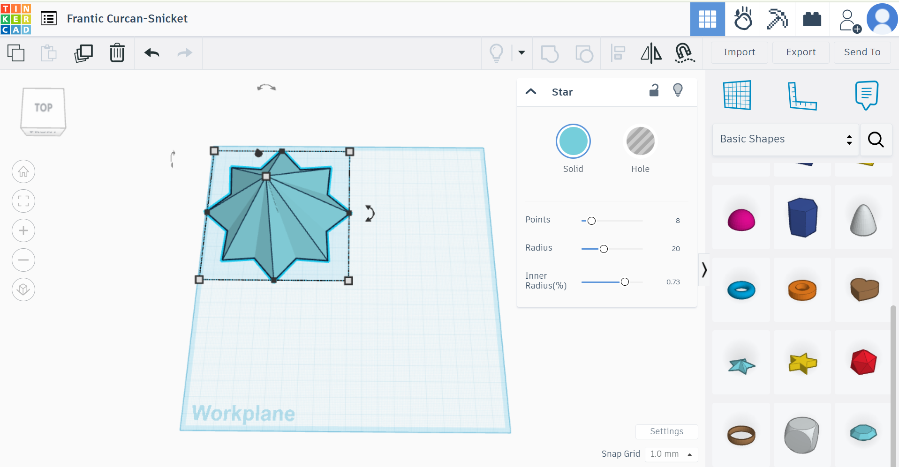
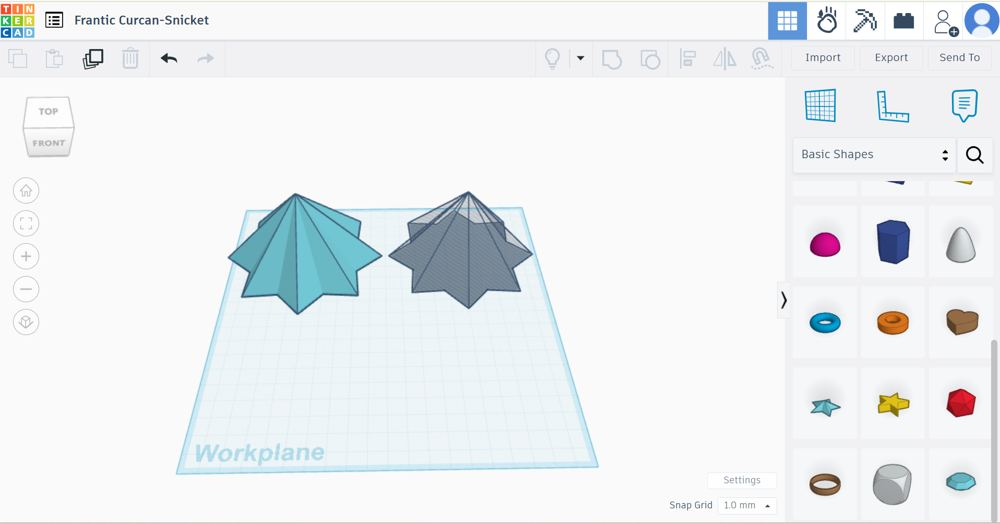
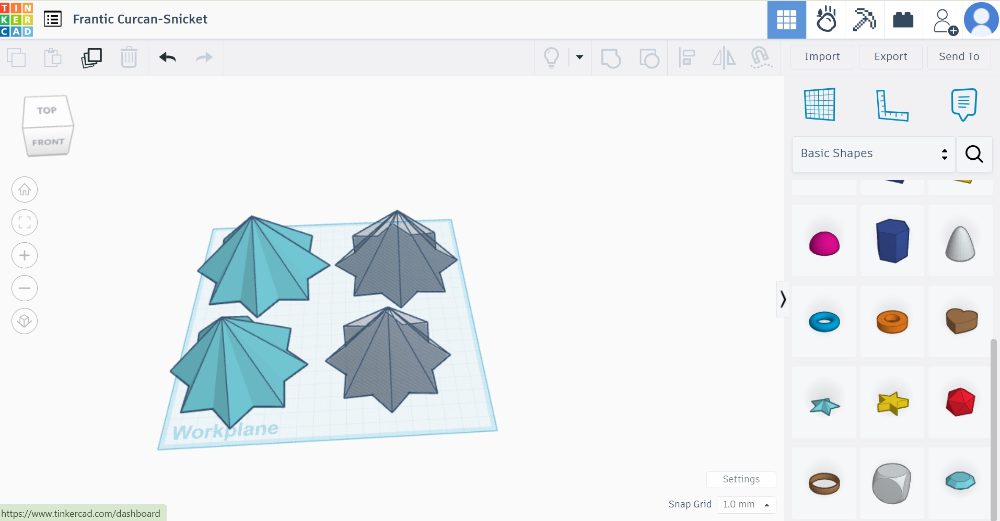
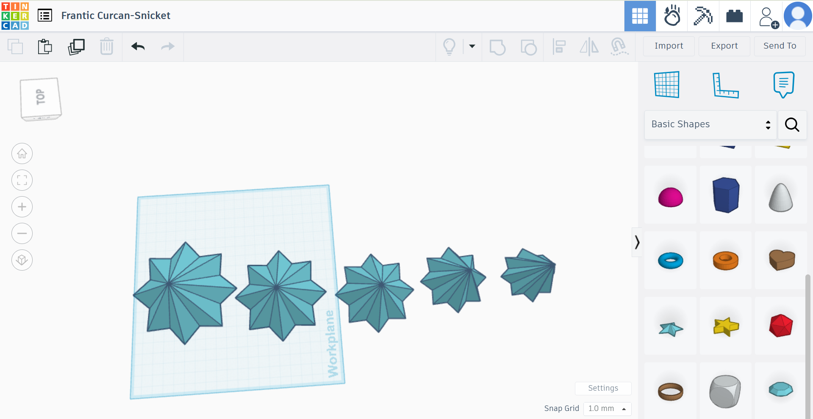
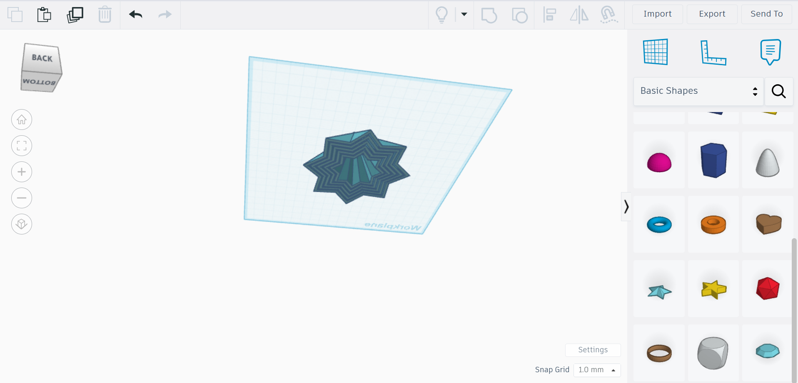
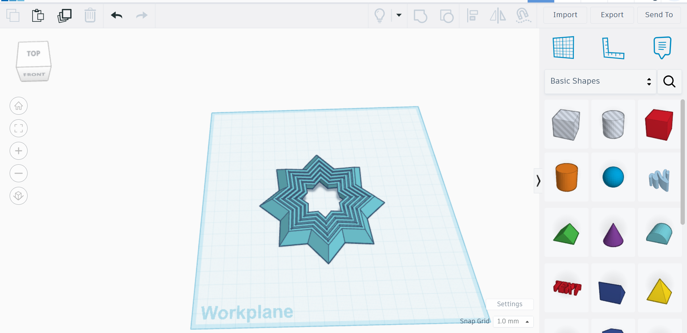
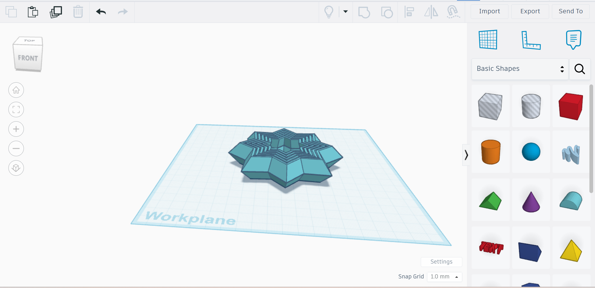

3D Print
- My first step was to get on the app TinkerCad.
- I then got the star shape and put it to specific dimensions. 
- The next step was to duplicate the star this time making is 6 units smaller in both length and width while making it a removing piece. 
- I then repeated this process 4 more times deacreasing each star by 6 units in length and width. 
- After I merged each star with its corresponding remover star. 
- Then I merged all the stars together so the bottom would look like this. 
- After I removed the top 10 units of the stars so I could continue the design process. 
- This next step was the most important to finish the fidget star.
- I duplicated the star, flipped it around, and ut it on top of the other star.
- Then I sent the stl document to Mr. Perez and he printed it out. 
- Here is the printed fidget star.
For my 3D print I designed something fun to use. I made a star fidget toy and will be explaining my process.